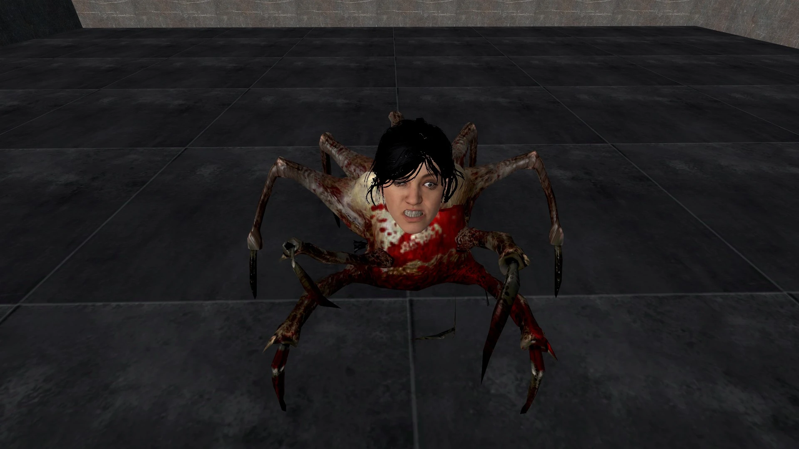

 | |
| La Semi dans sa cellule de confinement, photographiée juste avant que le photographe ne demande sa mutation. | |
| Classification | |
| Règne | Animalia (de justesse) |
|---|---|
| Embranchement | Arthropoda |
| Classe | Arachnida |
| Ordre | Araneae |
| Famille | Cephalanthropidae |
| Genre | Semia |
| Nom binominal | |
| Semia faciesirata (Dubreuil & Pastèque, 2026) | |
| Caractéristiques | |
| Population | 1 (et c'est déjà beaucoup) |
| Envergure | 80 à 140 cm (pattes comprises) |
| Masse | 12 à 18 kg, dont 6 kg de tête parfaitement inutile |
| Âge | Environ trois semaines (sous cette forme) |
| Régime | Celui d'une araignée (la tête ne mange pas) |
| Utilité de la tête | Aucune |
| Origine | Insurrection du Chaos (octobre 2026) |
| Statut de conservation | |
| 🔴 Unique (un seul individu, aucun remplaçant)[1] | |
La Semi (Semia faciesirata), parfois appelée araignée-visage ou tête-qui-marche, est une créature arachnide de grande taille, unique au monde, caractérisée par la présence d'une tête humaine en lieu et place du céphalothorax : celle d'une ancienne agente de la Fondation SCP, connue uniquement sous son nom de code, « Semi ». Il n'en existe qu'un seul exemplaire, ce qui fait d'elle à la fois une espèce, une population et un individu. Elle est également la seule créature connue à cumuler huit pattes, deux chélicères et une frange.
Créée début octobre 2026 par l'Insurrection du Chaos, qui a décapité l'agente avant de greffer sa tête sur le corps d'une araignée géante, elle est aujourd'hui confinée par la Fondation. Elle reste mal connue, principalement parce que les chercheurs chargés de l'étudier demandent leur mutation au bout de quelques jours[2].
Sur le plan biologique, la Semi est une araignée parfaitement ordinaire. La tête, bien que fraîche et expressive en apparence, n'est reliée à rien et ne remplit aucune fonction. Son expression contrariée permanente fait néanmoins l'objet de nombreux débats, même si la plupart des gens la trouvent franchement justifiée vu les circonstances.
Étymologiemodifier
La créature porte le nom de code de l'agente dont elle a hérité la tête : Semi. Comme le veut l'usage à la Fondation, sa véritable identité est classifiée ; dans tous les dossiers, elle est désignée par ce seul nom, parfois abrégé en « S. » ou, dans les rapports postérieurs au 3 octobre 2026, en « elle (enfin, sa tête) ».
L'origine du nom de code lui-même reste débattue. Selon l'hypothèse la plus répandue, il viendrait du latin semi (« à moitié »), ce qui, au vu de la suite des événements, relève de la prophétie. Une autre hypothèse, défendue par un agent d'entretien du site, affirme que c'était simplement « le nom qu'il y avait sur sa tasse »[réf. nécessaire].
L'épithète spécifique faciesirata signifie « au visage irrité ».
Originemodifier
L'agente Semi
Avant les faits, Semi était agente de terrain de la Fondation SCP, affectée aux opérations de récupération. Son dossier, largement caviardé, la décrit comme efficace, ponctuelle et « pas du matin, ni du soir, ni vraiment de l'après-midi ». Elle avait les cheveux noirs, coupés au carré, et l'expression contrariée qui fait aujourd'hui sa célébrité était déjà la sienne bien avant l'incident. Elle avait reçu une mention pour avoir neutralisé à elle seule trois agents de l'Insurrection du Chaos, ce qui, selon plusieurs analystes, explique en grande partie la suite.
L'opération de l'Insurrection du Chaos
Le 3 octobre 2026, au cours d'une mission de récupération qui tourne mal, Semi est capturée par l'Insurrection du Chaos. Ses ravisseurs la décapitent, puis greffent sa tête, maintenue dans un état de fraîcheur troublant par un procédé dont ils n'ont jamais publié la notice, sur le corps d'une araignée géante capturée quelques mois plus tôt et surnommée Josiane. Josiane n'a pas été consultée.
La greffe est une réussite sur le plan esthétique et un échec sur tous les autres : la tête n'est raccordée ni au système nerveux ni au système digestif de l'araignée. Elle est simplement posée là, solidement fixée, comme une figure de proue.
Le but de l'opération reste flou. Un document saisi plus tard évoque une « arme psychologique destinée à démoraliser la Fondation » ; un autre, nettement plus court, dit simplement : « Parce qu'on pouvait. »
Retour à la Fondation
La créature est relâchée à proximité d'un site de la Fondation. Elle est retrouvée le 6 octobre, immobile dans le hall d'accueil, l'air très mécontent. Ses anciens collègues reconnaissent immédiatement le visage. L'araignée mord ensuite le seul responsable que l'agente ne supportait pas ; les analyses ont conclu à une coïncidence, mais personne sur le site n'y croit. Elle est depuis confinée sur place. La Fondation la considère toujours comme membre de son personnel, ce qui pose des problèmes administratifs inédits, en particulier pour le calcul de ses congés payés et le choix de la taille de son badge.
Descriptionmodifier
Morphologie générale
Le corps de la Semi se divise en deux parties :
- le céphalothorax, entièrement recouvert par la tête de l'agente, avec deux yeux, un nez, une bouche dotée d'une dentition complète (32 dents, aucune carie) et une chevelure noire abondante ;
- l'abdomen, de couleur beige à rouge sombre, d'aspect charnu, dont la texture a été décrite comme « franchement pas engageante ».
La jonction entre la tête et le corps, réalisée par l'Insurrection, est d'une qualité que les chirurgiens de la Fondation qualifient, à contrecœur, de « honteusement propre ».
Huit pattes articulées, longues et brunâtres, se terminent chacune par une griffe noire et effilée. Deux appendices antérieurs, plus courts et plus robustes, servent à la préhension et à la défense. Ce sont eux, et non la tête, qui font tout le travail.
La tête
La tête est l'organe le plus étudié de la créature, et de loin le moins utile. Elle ne voit pas, n'entend pas, ne mange pas et ne commande rien. L'araignée voit grâce à ses propres yeux, huit petits yeux noirs situés sous le menton de la tête, que l'équipe scientifique a mis quatre jours à remarquer. Dans son rapport, le Dr Dubreuil décrit la tête comme « un chapeau, en plus lourd ».
La chevelure, en revanche, continue de pousser, à raison d'environ 1,2 cm par mois. Elle exige un entretien régulier, assuré chaque semaine par un agent tiré au sort. Le brushing du vendredi est déjà devenu l'affectation la plus redoutée du site.
Les muscles faciaux sont figés en position de rictus. Une expérience menée le 12 octobre 2026 a montré que la tête, présentée à un chaton, n'a modifié son expression que de 0 %. L'araignée, elle, s'est enfuie[3].
Absence de conscience
Malgré les espoirs du personnel, rien n'indique qu'il reste quoi que ce soit de l'agente Semi. La tête ne réagit pas à son nom de code, ne reconnaît personne et ne cligne même pas des yeux. Tous les comportements observés sont ceux d'une araignée ordinaire. Plusieurs collègues continuent malgré tout de lui dire bonjour le matin, « au cas où ».
Comportementmodifier
Locomotion
La Semi se déplace avec une rapidité surprenante pour une araignée qui transporte une tête humaine, atteignant 25 km/h en ligne droite. Elle grimpe aux murs et aux plafonds, où elle peut rester immobile pendant des heures. La tête, entraînée malgré elle, semble alors observer les humains d'en haut, ce qui n'aide personne.
Communication
La Semi ne communique pas davantage qu'une araignée ordinaire. La bouche de la tête reste fermée sur des dents serrées, ce qui donne l'impression permanente qu'elle grince des dents. Elle ne grince rien. Le seul signal identifié est le cliquetis de ses griffes sur le carrelage, que certains agents s'obstinent à interpréter comme du morse.
« Après dix jours d'écoute, j'ai pu traduire ses cliquetis. Ils ne veulent rien dire. Mais elle a quand même l'air de penser : “Qu'est-ce que tu regardes ?” »
Alimentation
La Semi se nourrit exactement comme une araignée : elle capture ses proies avec ses pattes avant et les consomme avec ses chélicères, situées sous la tête. La bouche humaine ne sert à rien. Le personnel continue néanmoins de déposer chaque vendredi un paquet de chips au paprika devant elle, en hommage à l'agente, qui les adorait. Les chips sont ensuite mangées par l'équipe de nuit.
| Aliment | Consommé par | Remarque |
|---|---|---|
| Insectes | L'araignée | Quotidiennement |
| Souris | L'araignée | Une fois par semaine |
| Chips au paprika | L'équipe de nuit | Hommage du vendredi[4] |
| Brocolis | Personne | Même l'araignée refuse |
Reproduction
La Semi étant l'unique représentante de son espèce, la question de sa reproduction ne se pose pas, ce dont tout le monde se félicite. Une proposition visant à lui trouver un « partenaire », formulée le 15 octobre 2026, a été rejetée par le comité d'éthique en moins de quatre minutes.
Confinementmodifier
La Semi occupe une cellule de confinement de 4 m² sur un site de la Fondation dont l'emplacement est classifié. La cellule est sombre, fraîche et carrelée, ce qui convient à l'araignée. Elle s'en est échappée trois fois en trois semaines et a été retrouvée chaque fois devant le distributeur automatique du deuxième étage, l'endroit préféré de l'agente. Les analyses parlent de coïncidence ; le personnel, non.
Relations avec l'être humainmodifier
Dangerosité
La Semi n'est pas venimeuse. Sa morsure, bien que douloureuse, est surtout humiliante. Le principal danger qu'elle représente est d'ordre psychologique : 87 % des personnes ayant croisé le regard de la tête déclarent « se sentir jugées » pendant plusieurs jours, alors même que la tête ne voit rien[5].
Consignes au personnel
Le personnel affecté à la Semi est tenu de respecter les consignes suivantes :
- ne pas regarder la tête fixement plus de dix secondes (elle ne vous voit pas, mais quand même) ;
- ne jamais mentionner l'Insurrection du Chaos en sa présence, par respect pour l'agente ;
- ne pas l'appeler « la bestiole » ;
- déposer le paquet de chips du vendredi (voir Alimentation).
Dans la culture populairemodifier
Bien que la Semi n'existe que depuis trois semaines, elle a déjà laissé une trace :
- Une vidéo de la créature, filmée par un agent et publiée en ligne le 9 octobre 2026, a dépassé les deux millions de vues en 48 heures. La Fondation affirme qu'il s'agit d'un trucage.
- Au sein de la Fondation, l'expression « faire la tête de Semi » est apparue dès la première semaine pour désigner une bouderie particulièrement intense.
- Une peluche à son effigie a été mise en vente sur un site en ligne le 14 octobre 2026 par un vendeur inconnu, puis retirée en une nuit.
Voir aussimodifier
- Chaussette orpheline (autre mystère de la salle de bain)
- Fondation SCP
- Insurrection du Chaos
- Arachnophobie
- Visagophobie
- Chips au paprika
Notes et référencesmodifier
- ↑ Union internationale pour la conservation des choses bizarres (UICCB), Liste orange des espèces qui mettent mal à l'aise, mise à jour d'octobre 2026.
- ↑ H. Dubreuil et J. Pastèque, « Description d'un arachnide céphalanthrope nouveau », Bulletin interne de la Fondation SCP, n° 412, octobre 2026, p. 3-4 (article interrompu).
- ↑ M. Grosjean, « Réponse de la tête de Semia faciesirata face à des stimuli mignons (résultat : aucune) », note de laboratoire, 12 octobre 2026.
- ↑ Registre de la cantine du site, semaines 41 à 43.
- ↑ Sondage réalisé auprès de 15 personnes, dont 13 ont refusé d'en parler davantage.